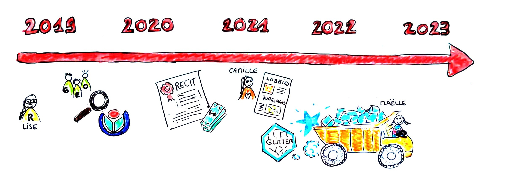

glitter makes SPARQL
glitter, un package R pour explorer et collecter des données du web sémantique
Séminaire R à l’Usage des Sciences Sociales
7/4/23
Projet RECIT et package glitter
Projet: origine
Analyste de données dans un labo de géographie (UMR 5600 Environnement Ville Société)
R√¥le p√©dagogique: aider les coll√®gues √† utiliser R pour leurs analyses/valorisation (blogüîó)
Travail d’appui à la recherche => développement d’outils d’analyse, recueil de données du web (API, web-scraping…)
Intérêt pour les données du web (réseaux sociaux, projet Wikimedia)
Découverte du web des données (LOD: Linked Open Data) via les Wikidata
Projet: RECIT
Projet émergent ENS RECIT:
R pour l’Exploration et la Collecte Intégrée de Triplets de données
Projet: débuts et cas d’études
Stage M2 Camille Scheffler et exploration des Wikidata pour deux cas d’études:
- Les jumelages en Europe et dans le monde (Camille Scheffler, Ninon Briot, ATER ENS de Lyon)
- Le lobbyisme aux USA (Camille Scheffler, Florence Nussbaum, MCF ENS de Lyon)
Projet: développement

En lien (et en parallèle) aux cas d’études de Camille, début du développement du package R glitter en 2021.
Première prestation de Maëlle Salmon début 2022
Projet: à venir
2023: second gros chantier sur le package: nouvelle presta de üí™Ma√´lle
Projet: objectifs
üéØ Promouvoir l‚Äôusage (exploration, recueil, analyse) des donn√©es du web s√©mantique pour les chercheurs et √©tudiants usagers de R, en:
- facilitant l’écriture des requêtes SPARQL
- facilitant l’envoi des requêtes
- facilitant le nettoyage des résultats pour une analyse/valorisation ultérieure dans R
Web sémantique
Web sémantique et Linked Open Data
üí° Web s√©mantique Vision du web dans laquelle les donn√©es sont structur√©es et organis√©es pour √™tre traitables par des machines => lien √©troit aux principes FAIR (Findable Accessible Interoperable Reusable)
üß±Ô∏è Linked Open Data: Une r√©alisation concr√®te de cette vision, consistant en des donn√©es interconnect√©es et accessible sur le web. Web des donn√©es
Linked Open Data: Données du web / web des données

© Camille Scheffler
Linked Open Data: : LOD-cloud
Linked Open Data

Linked Open Data: difficultés d’appropriation
Importance des exemples de requêtes SPARQL pour explorer les bases de données Or, le langage SPARQL est spécifique à
cette étape (dans l’analyse) du recueil de données
ce type de données (les Linked Open Data)
Exploration de Wikidata
Wikidata: exploration côté “documentaire”
Wikidata et… ChatGPT
Avant: entrée par le web “documentaire”. Maintenant… bonjour ChatGPT

Wikidata: exploration côté “données”
Passage par le Wikidata Query Service (WDQS)
Wikidata: focus sur le SPARQL endpoint (depuis le navigateur)
SELECT ?film ?filmLabel
WHERE {
?film wdt:P31 wd:Q11424.
SERVICE wikibase:label {
bd:serviceParam wikibase:language "[AUTO_LANGUAGE],en".
}
}
LIMIT 10- ✍️ Rédaction de la requête SPARQL
- ⚙️ Exécution depuis le SPARQL endpoint (navigateur web)
- üì• Affichage/T√©l√©chargement des r√©sultats
Wikidata: focus sur le code depuis R
- ✍️ Rédaction de la requête SPARQL
- ⚙️ Exécution depuis R
- üéÅ R√©cup√©ration du tableau de r√©sultats en tant qu‚Äôobjet R
üéØ Cha√Æne de traitement reproductible
Wikidata: focus sur le code depuis R, avec glitter
- ✍️ ⚙️ Rédaction et envoi de commandes R
- üéÅ Recueil du tableau de r√©sultats en tant qu‚Äôobjet R
| film | filmLabel |
|---|---|
| http://www.wikidata.org/entity/Q372 | We Live in Public |
| http://www.wikidata.org/entity/Q593 | A Gang Story |
| http://www.wikidata.org/entity/Q595 | The Intouchables |
| http://www.wikidata.org/entity/Q1365 | Swept Away |
| http://www.wikidata.org/entity/Q2201 | Kick-Ass |
| http://www.wikidata.org/entity/Q2345 | 12 Angry Men |
| http://www.wikidata.org/entity/Q2875 | Gone with the Wind |
| http://www.wikidata.org/entity/Q3092 | The Man Between |
| http://www.wikidata.org/entity/Q3187 | Rough Night in Jericho |
| http://www.wikidata.org/entity/Q3208 | Alien Raiders |
Wikidata: avant-après glitter
Avant:
Après:
Exemple de requête et valorisation: lieux de fiction
Ex. lieux de fiction: que veut-on faire?
- üé• On souhaite r√©cup√©rer dans Wikidata les donn√©es relatives aux films,
- üìç notamment le lieu de la narration (et les coordonn√©es associ√©es),
- üåç pour les placer sur une carte.
Ex. lieux de fiction: recueil des données
tib <- spq_init() %>% # Initialise requête puis
spq_add("?film wdt:P31 wd:Q11424", # Ajoute motif "?film est une instance de film"
.label="?film") %>% # ... étiquette ?film puis
spq_add("?film wdt:P840 ?loc", # Ajoute motif "?film a pour localisation narrative ?loc
.label="?loc") %>% # ... étiquette ?loc puis
spq_language("en,fr") %>% # Affiche les étiquettes en anglais, ou à défaut en français puis
spq_head(n=10) %>% # Sélectionne les 10 premiers résultats puis
spq_perform() # Envoie la requête| film | filmLabel | loc | locLabel |
|---|---|---|---|
| http://www.wikidata.org/entity/Q2306504 | Road to Zanzibar | http://www.wikidata.org/entity/Q15 | Africa |
| http://www.wikidata.org/entity/Q2331220 | The Ambassador | http://www.wikidata.org/entity/Q15 | Africa |
| http://www.wikidata.org/entity/Q2360477 | Fatma 75 | http://www.wikidata.org/entity/Q15 | Africa |
| http://www.wikidata.org/entity/Q2404941 | The Naked Earth | http://www.wikidata.org/entity/Q15 | Africa |
| http://www.wikidata.org/entity/Q2410746 | The Dead | http://www.wikidata.org/entity/Q15 | Africa |
| http://www.wikidata.org/entity/Q2438619 | Death Drums Along the River | http://www.wikidata.org/entity/Q15 | Africa |
| http://www.wikidata.org/entity/Q2467397 | Allan Quatermain and the Temple of Skulls | http://www.wikidata.org/entity/Q15 | Africa |
| http://www.wikidata.org/entity/Q2500403 | George of the Jungle 2 | http://www.wikidata.org/entity/Q15 | Africa |
| http://www.wikidata.org/entity/Q2517317 | My Father the Hero | http://www.wikidata.org/entity/Q15 | Africa |
| http://www.wikidata.org/entity/Q2558483 | ABC Africa | http://www.wikidata.org/entity/Q15 | Africa |
Ex. lieux de fiction: pas trop de données?
Combien de films ont la localisation narrative renseignée dans Wikidata?
tib <- spq_init() %>% # Initialise requête puis
spq_add("?film wdt:P31 wd:Q11424", # Ajoute motif "?film est une instance de film"
.label="?film") %>% # ... étiquette ?film puis
spq_add("?film wdt:P840 ?loc", # Ajoute motif "?film a pour lieu de l'action ?loc"
.label="?loc") %>% # ...étiquette ?loc puis
spq_summarise(n_films=n(film)) %>% # Résume en comptant le nombre de films puis
spq_perform() # Envoie la requête| n_films |
|---|
| 50860 |
Ex. lieux de fiction : on va restreindre un peu (géographiquement) …
lf_1=spq_init() %>% # Initialise requête puis
spq_add("?film wdt:P31 wd:Q11424", # Ajoute motif "?film est une instance de film"
.label="?film") %>% # ... étiquette ?film
spq_add("?film wdt:P840 ?loc", # Ajoute motif "?film a pour localisation narrative ?loc
.label="?loc") %>% # (à étiqueter) puis
spq_add("?loc wdt:P625 ?coords", # Ajoute motif "?loc a pour coordonnées spatiales ?coords"
.within_box=list(southwest=c(3,43), # ... restreins pour que les coordonnées soient comprises
northeast=c(7,47))) %>% # ... dans un cadre défini par ces deux points (S-O et N-E) puis
spq_language("fr") %>% # Etiquette de préférence en français puis
spq_perform() # Envoie la requêteCette table comprend 331 lignes. Voici les premières:
| film | filmLabel | loc | locLabel | coords |
|---|---|---|---|---|
| http://www.wikidata.org/entity/Q86427 | À bout de souffle | http://www.wikidata.org/entity/Q23482 | Marseille | Point(5.376388888 43.296666666) |
| http://www.wikidata.org/entity/Q105624 | La Mémoire dans la peau | http://www.wikidata.org/entity/Q23482 | Marseille | Point(5.376388888 43.296666666) |
| http://www.wikidata.org/entity/Q151711 | Marie-Jo et ses deux amours | http://www.wikidata.org/entity/Q23482 | Marseille | Point(5.376388888 43.296666666) |
| http://www.wikidata.org/entity/Q190588 | Love Actually | http://www.wikidata.org/entity/Q23482 | Marseille | Point(5.376388888 43.296666666) |
| http://www.wikidata.org/entity/Q208108 | Arrête-moi si tu peux | http://www.wikidata.org/entity/Q23482 | Marseille | Point(5.376388888 43.296666666) |
| http://www.wikidata.org/entity/Q215319 | L’Immortel | http://www.wikidata.org/entity/Q23482 | Marseille | Point(5.376388888 43.296666666) |
Ex. lieux de fiction: et on enrichit!
lf_2=spq_init() %>% # Initialise requête puis
spq_add("?film wdt:P31 wd:Q11424", # Ajoute motif "?film est une instance de film"
.label="?film") %>% # ... étiquette ?film puis
spq_add("?film wdt:P840 ?loc", # Ajoute motif "?film a pour localisation narrative ?loc
.label="?loc") %>% # ... étiquette ?loc puis
spq_add("?loc wdt:P625 ?coords", # Ajoute motif "?loc a pour coordonnées spatiales ?coords"
.within_box=list(southwest=c(3,43), # ... restreins pour que les coordonnées soient comprises
northeast=c(7,47))) %>% # ... dans un cadre défini par ces deux points (S-O et N-E) puis
spq_add("?film wdt:P18 ?image", # Ajoute motif "?film a pour image d'illustration ?image"
.required=FALSE) %>% # ... si dispo, puis
spq_add("?film wdt:P921 ?subject", # Ajoute motif "?film a pour sujet ?subject"
.label="?subject", .required=FALSE) %>% # ... si dispo, et étiquette ?subject puis
spq_add("?film wdt:P577 ?date") %>% # Ajoute motif "?film a été publié à la date ?date puis
spq_mutate(year=year(date)) %>% # Ajoute variable year qui correspond à l'année de ?date puis
spq_language("fr,en") %>% # Etiquette quand demandé de préférence en français, à défaut en anglais puis
spq_perform() # Envoie la requêteEx. lieux de fiction: et on enrichit!
Cette table comprend 843 lignes. Voici les premières:
| filmLabel | locLabel | coords | image | subjectLabel |
|---|---|---|---|---|
| Le Président | Languedoc-Roussillon | Point(3.166666666 43.666666666) | NA | NA |
| L’Emmerdeur | Montpellier | Point(3.877230555 43.610919444) | NA | NA |
| Le Président | Montpellier | Point(3.877230555 43.610919444) | NA | NA |
| Mastemah | Aubrac | Point(3.08222222 44.56694444) | NA | NA |
| Antoinette dans les Cévennes | Cévennes | Point(3.73926389 44.42623611) | NA | NA |
| Seules les bêtes | Lozère | Point(3.6 44.333333333) | NA | aléatoirité |
Ex. lieux de fiction: requête SPARQL
SELECT ?film ?loc ?coords ?image ?subject ?date (YEAR(?date) AS ?year)
WHERE{
?film wdt:P31 wd:Q11424.
?film wdt:P840 ?loc.
SERVICE wikibase:box {
?loc wdt:P625 ?coords.
bd:serviceParam wikibase:cornerSouthWest 'Point(3 43)'^^geo:wktLiteral.
bd:serviceParam wikibase:cornerNorthEast 'Point(7 47)'^^geo:wktLiteral.
}
OPTIONAL {?film wdt:P18 ?image.}
OPTIONAL {?film wdt:P921 ?subject.}
?film wdt:P577 ?date.
SERVICE wikibase:label { bd:serviceParam wikibase:language "fr,en".}
}Ex. lieux de fiction: nettoyage sous R
lf_c=lf_2 %>% # Considère lf_2 puis
clean_wikidata_table() %>% # préfixe les uri
select(film,ends_with("Label"),coords,image,year) %>% # Sélectionne ces variables (dont "....Label") puis
group_by(film,coords,image,locLabel,filmLabel) %>% # Groupe par ces variables puis
summarise(subjectLabel=paste0(unique(subjectLabel), # Résume par groupe: le sujet (sur une seule ligne)
collapse=", "), # ... en séparant les éléments par ", "
year=min(year), # ... et l'année comme minimum des années de sortie
.groups="drop") # DégroupeCette table comprend 329 lignes. Voici les premières:
| film | coords | image | locLabel | filmLabel | subjectLabel | year |
|---|---|---|---|---|---|---|
| wd:Q100276888 | Point(6.5 44.8) | NA | Alpes françaises | Slalom | sport de compétition, sports industry | 2020 |
| wd:Q1033136 | Point(5.376388888 43.296666666) | http://commons.wikimedia.org/wiki/Special:FilePath/Elka%C3%AFm%20Donzelli%20Cabourg%202011.jpg | Marseille | La guerre est déclarée | cancer | 2011 |
| wd:Q105624 | Point(3.156666666 46.9925) | NA | Nevers | La Mémoire dans la peau | amnésie | 2002 |
| wd:Q105624 | Point(5.376388888 43.296666666) | NA | Marseille | La Mémoire dans la peau | amnésie | 2002 |
| wd:Q1061541 | Point(5.376388888 43.296666666) | NA | Marseille | Un prophète | crime organisé | 2009 |
| wd:Q1062358 | Point(3.086944444 45.779722222) | NA | Clermont-Ferrand | Quand j’étais chanteur | vieillissement, industrie du spectacle, relation amoureuse, âge moyen, falling in love, human bonding, chansonnier, end of career | 2006 |
Ex. lieux de fiction: préparation des données pour carto
üí¨ Pr√©paration d‚Äôune fen√™tre ‚Äúpop-up‚Äù (langage html) pour affichage d‚Äôinfos dans la carte
lf_m =lf_c %>%
transform_wikidata_coords("coords") %>%
mutate(popup=glue::glue("<h1>{filmLabel}</h1>
<li>Lieu: {locLabel}</li>
<li>Année de sortie: {year}</li>")) %>%
mutate(popup=case_when(is.na(image)~popup,
!is.na(image)~glue::glue("{popup}
<img src='{image}' height='200'>"))) %>%
mutate(popup=case_when(is.na(subjectLabel)~popup,
!is.na(subjectLabel)~glue::glue("{popup}
<li>Thèmes: {subjectLabel}</li>")))Ex. lieux de fiction: production d’une carte
üåç Production d‚Äôune carte leaflet (carte interactive dans un doc. html).
library(leaflet)
# Définition d'une échelle colorée
# (en fonction de date de sortie)
pal <- colorNumeric(c("red", "green", "blue"), c(1895,1950,1970,1990,2010,2021))
# Création de la carte
map=leaflet(lf_m) %>% # déf carte
addTiles() %>% # ajout fond de carte
addCircleMarkers(col=~pal(year), ~lng, ~lat,
popup = ~popup,
clusterOptions = markerClusterOptions()) Dimensionnement des requêtes
Dimensionnement des requêtes
|
Temps de réponse du serveur limité par un paramètre de Time out:
=> 220 000 lignes pour film environ:
|

|
Dimensionnement des requêtes
|
Temps de réponse du serveur limité par un paramètre de Time out:
=> 2 millions de lignes pour film, genre, actor
|

{kind=link}
Dimensionnement des requêtes
|
Temps de réponse du serveur limité par un paramètre de Time out:
=> 220 000 de lignes pour film, genre, actor, image :
|
Combinaison de requêtes
get_genre_and_actors=function(film_id){
result=spq_init() %>%
spq_set(film= film_id) %>%
spq_add("?film wdt:P136 ?genre",.label="?genre") %>%
spq_add("?film wdt:P161 ?actor",.label="?actor",.required=FALSE) %>%
spq_perform() %>%
select(-film)
return(result)
}
tib_genre_actors=lf_c %>%
head() %>%
mutate(data=purrr::map(film,get_genre_and_actors)) %>%
unnest(cols=data) %>%
clean_wikidata_table()| filmLabel | genreLabel | actorLabel |
|---|---|---|
| Slalom | drama film | Jérémie Renier |
| Slalom | drama film | Marie Denarnaud |
| Slalom | drama film | Catherine Marchal |
| Slalom | drama film | Muriel Combeau |
| Slalom | drama film | Axel Auriant |
| Slalom | drama film | Noée Abita |
| Slalom | drama film | Maïra Schmitt |
| La guerre est déclarée | drama film | Valérie Donzelli |
| La guerre est déclarée | comedy film | Valérie Donzelli |
| La guerre est déclarée | drama film | Jennifer Decker |
| La guerre est déclarée | comedy film | Jennifer Decker |
| La guerre est déclarée | drama film | Elina Löwensohn |
| La guerre est déclarée | comedy film | Elina Löwensohn |
| La guerre est déclarée | drama film | Frédéric Pierrot |
| La guerre est déclarée | comedy film | Frédéric Pierrot |
| La guerre est déclarée | drama film | Lucia Sanchez |
| La guerre est déclarée | comedy film | Lucia Sanchez |
| La guerre est déclarée | drama film | Emmanuel Salinger |
| La guerre est déclarée | comedy film | Emmanuel Salinger |
| La guerre est déclarée | drama film | Jérémie Elkaïm |
| La guerre est déclarée | comedy film | Jérémie Elkaïm |
| La guerre est déclarée | drama film | Laure Marsac |
| La guerre est déclarée | comedy film | Laure Marsac |
| La guerre est déclarée | drama film | Philippe Laudenbach |
| La guerre est déclarée | comedy film | Philippe Laudenbach |
| La guerre est déclarée | drama film | Adrien Antoine |
| La guerre est déclarée | comedy film | Adrien Antoine |
| La guerre est déclarée | drama film | Anne Berest |
| La guerre est déclarée | comedy film | Anne Berest |
| La guerre est déclarée | drama film | Anne Le Ny |
| La guerre est déclarée | comedy film | Anne Le Ny |
| La guerre est déclarée | drama film | Bastien Bouillon |
| La guerre est déclarée | comedy film | Bastien Bouillon |
| La guerre est déclarée | drama film | Blanche Gardin |
| La guerre est déclarée | comedy film | Blanche Gardin |
| La guerre est déclarée | drama film | Brigitte Sy |
| La guerre est déclarée | comedy film | Brigitte Sy |
| La guerre est déclarée | drama film | Dorothée Sebbagh |
| La guerre est déclarée | comedy film | Dorothée Sebbagh |
| La guerre est déclarée | drama film | Esteban Carvajal Alegria |
| La guerre est déclarée | comedy film | Esteban Carvajal Alegria |
| La guerre est déclarée | drama film | Katia Lewkowicz |
| La guerre est déclarée | comedy film | Katia Lewkowicz |
| La guerre est déclarée | drama film | Laurent Lacotte |
| La guerre est déclarée | comedy film | Laurent Lacotte |
| La guerre est déclarée | drama film | Marie-Sohna Condé |
| La guerre est déclarée | comedy film | Marie-Sohna Condé |
| La guerre est déclarée | drama film | Marion Lécrivain |
| La guerre est déclarée | comedy film | Marion Lécrivain |
| La guerre est déclarée | drama film | Michèle Moretti |
| La guerre est déclarée | comedy film | Michèle Moretti |
| La guerre est déclarée | drama film | Nozha Khouadra |
| La guerre est déclarée | comedy film | Nozha Khouadra |
| La guerre est déclarée | drama film | Philippe Barassat |
| La guerre est déclarée | comedy film | Philippe Barassat |
| La guerre est déclarée | drama film | Riad Sattouf |
| La guerre est déclarée | comedy film | Riad Sattouf |
| La guerre est déclarée | drama film | Serge Bozon |
| La guerre est déclarée | comedy film | Serge Bozon |
| La guerre est déclarée | drama film | Valentine Catzéflis |
| La guerre est déclarée | comedy film | Valentine Catzéflis |
| La guerre est déclarée | drama film | Alain Kruger |
| La guerre est déclarée | comedy film | Alain Kruger |
| La guerre est déclarée | drama film | Béatrice de Staël |
| La guerre est déclarée | comedy film | Béatrice de Staël |
| La guerre est déclarée | drama film | Pauline Gaillard |
| La guerre est déclarée | comedy film | Pauline Gaillard |
| La Mémoire dans la peau | action film | Brian Cox |
| La Mémoire dans la peau | mystery film | Brian Cox |
| La Mémoire dans la peau | spy film | Brian Cox |
| La Mémoire dans la peau | thriller film | Brian Cox |
| La Mémoire dans la peau | action thriller | Brian Cox |
| La Mémoire dans la peau | film based on a novel | Brian Cox |
| La Mémoire dans la peau | political thriller film | Brian Cox |
| La Mémoire dans la peau | action film | Franka Potente |
| La Mémoire dans la peau | mystery film | Franka Potente |
| La Mémoire dans la peau | spy film | Franka Potente |
| La Mémoire dans la peau | thriller film | Franka Potente |
| La Mémoire dans la peau | action thriller | Franka Potente |
| La Mémoire dans la peau | film based on a novel | Franka Potente |
| La Mémoire dans la peau | political thriller film | Franka Potente |
| La Mémoire dans la peau | action film | Matt Damon |
| La Mémoire dans la peau | mystery film | Matt Damon |
| La Mémoire dans la peau | spy film | Matt Damon |
| La Mémoire dans la peau | thriller film | Matt Damon |
| La Mémoire dans la peau | action thriller | Matt Damon |
| La Mémoire dans la peau | film based on a novel | Matt Damon |
| La Mémoire dans la peau | political thriller film | Matt Damon |
| La Mémoire dans la peau | action film | Clive Owen |
| La Mémoire dans la peau | mystery film | Clive Owen |
| La Mémoire dans la peau | spy film | Clive Owen |
| La Mémoire dans la peau | thriller film | Clive Owen |
| La Mémoire dans la peau | action thriller | Clive Owen |
| La Mémoire dans la peau | film based on a novel | Clive Owen |
| La Mémoire dans la peau | political thriller film | Clive Owen |
| La Mémoire dans la peau | action film | Julia Stiles |
| La Mémoire dans la peau | mystery film | Julia Stiles |
| La Mémoire dans la peau | spy film | Julia Stiles |
| La Mémoire dans la peau | thriller film | Julia Stiles |
| La Mémoire dans la peau | action thriller | Julia Stiles |
| La Mémoire dans la peau | film based on a novel | Julia Stiles |
| La Mémoire dans la peau | political thriller film | Julia Stiles |
| La Mémoire dans la peau | action film | Chris Cooper |
| La Mémoire dans la peau | mystery film | Chris Cooper |
| La Mémoire dans la peau | spy film | Chris Cooper |
| La Mémoire dans la peau | thriller film | Chris Cooper |
| La Mémoire dans la peau | action thriller | Chris Cooper |
| La Mémoire dans la peau | film based on a novel | Chris Cooper |
| La Mémoire dans la peau | political thriller film | Chris Cooper |
| La Mémoire dans la peau | action film | Adewale Akinnuoye-Agbaje |
| La Mémoire dans la peau | mystery film | Adewale Akinnuoye-Agbaje |
| La Mémoire dans la peau | spy film | Adewale Akinnuoye-Agbaje |
| La Mémoire dans la peau | thriller film | Adewale Akinnuoye-Agbaje |
| La Mémoire dans la peau | action thriller | Adewale Akinnuoye-Agbaje |
| La Mémoire dans la peau | film based on a novel | Adewale Akinnuoye-Agbaje |
| La Mémoire dans la peau | political thriller film | Adewale Akinnuoye-Agbaje |
| La Mémoire dans la peau | action film | Joe Montana |
| La Mémoire dans la peau | mystery film | Joe Montana |
| La Mémoire dans la peau | spy film | Joe Montana |
| La Mémoire dans la peau | thriller film | Joe Montana |
| La Mémoire dans la peau | action thriller | Joe Montana |
| La Mémoire dans la peau | film based on a novel | Joe Montana |
| La Mémoire dans la peau | political thriller film | Joe Montana |
| La Mémoire dans la peau | action film | Walton Goggins |
| La Mémoire dans la peau | mystery film | Walton Goggins |
| La Mémoire dans la peau | spy film | Walton Goggins |
| La Mémoire dans la peau | thriller film | Walton Goggins |
| La Mémoire dans la peau | action thriller | Walton Goggins |
| La Mémoire dans la peau | film based on a novel | Walton Goggins |
| La Mémoire dans la peau | political thriller film | Walton Goggins |
| La Mémoire dans la peau | action film | Josh Hamilton |
| La Mémoire dans la peau | mystery film | Josh Hamilton |
| La Mémoire dans la peau | spy film | Josh Hamilton |
| La Mémoire dans la peau | thriller film | Josh Hamilton |
| La Mémoire dans la peau | action thriller | Josh Hamilton |
| La Mémoire dans la peau | film based on a novel | Josh Hamilton |
| La Mémoire dans la peau | political thriller film | Josh Hamilton |
| La Mémoire dans la peau | action film | Jimmy Jean-Louis |
| La Mémoire dans la peau | mystery film | Jimmy Jean-Louis |
| La Mémoire dans la peau | spy film | Jimmy Jean-Louis |
| La Mémoire dans la peau | thriller film | Jimmy Jean-Louis |
| La Mémoire dans la peau | action thriller | Jimmy Jean-Louis |
| La Mémoire dans la peau | film based on a novel | Jimmy Jean-Louis |
| La Mémoire dans la peau | political thriller film | Jimmy Jean-Louis |
| La Mémoire dans la peau | action film | David Bamber |
| La Mémoire dans la peau | mystery film | David Bamber |
| La Mémoire dans la peau | spy film | David Bamber |
| La Mémoire dans la peau | thriller film | David Bamber |
| La Mémoire dans la peau | action thriller | David Bamber |
| La Mémoire dans la peau | film based on a novel | David Bamber |
| La Mémoire dans la peau | political thriller film | David Bamber |
| La Mémoire dans la peau | action film | Gabriel Mann |
| La Mémoire dans la peau | mystery film | Gabriel Mann |
| La Mémoire dans la peau | spy film | Gabriel Mann |
| La Mémoire dans la peau | thriller film | Gabriel Mann |
| La Mémoire dans la peau | action thriller | Gabriel Mann |
| La Mémoire dans la peau | film based on a novel | Gabriel Mann |
| La Mémoire dans la peau | political thriller film | Gabriel Mann |
| La Mémoire dans la peau | action film | Orso Maria Guerrini |
| La Mémoire dans la peau | mystery film | Orso Maria Guerrini |
| La Mémoire dans la peau | spy film | Orso Maria Guerrini |
| La Mémoire dans la peau | thriller film | Orso Maria Guerrini |
| La Mémoire dans la peau | action thriller | Orso Maria Guerrini |
| La Mémoire dans la peau | film based on a novel | Orso Maria Guerrini |
| La Mémoire dans la peau | political thriller film | Orso Maria Guerrini |
| La Mémoire dans la peau | action film | David Gasman |
| La Mémoire dans la peau | mystery film | David Gasman |
| La Mémoire dans la peau | spy film | David Gasman |
| La Mémoire dans la peau | thriller film | David Gasman |
| La Mémoire dans la peau | action thriller | David Gasman |
| La Mémoire dans la peau | film based on a novel | David Gasman |
| La Mémoire dans la peau | political thriller film | David Gasman |
| La Mémoire dans la peau | action film | Arnaud Henriet |
| La Mémoire dans la peau | mystery film | Arnaud Henriet |
| La Mémoire dans la peau | spy film | Arnaud Henriet |
| La Mémoire dans la peau | thriller film | Arnaud Henriet |
| La Mémoire dans la peau | action thriller | Arnaud Henriet |
| La Mémoire dans la peau | film based on a novel | Arnaud Henriet |
| La Mémoire dans la peau | political thriller film | Arnaud Henriet |
| La Mémoire dans la peau | action film | Demetri Goritsas |
| La Mémoire dans la peau | mystery film | Demetri Goritsas |
| La Mémoire dans la peau | spy film | Demetri Goritsas |
| La Mémoire dans la peau | thriller film | Demetri Goritsas |
| La Mémoire dans la peau | action thriller | Demetri Goritsas |
| La Mémoire dans la peau | film based on a novel | Demetri Goritsas |
| La Mémoire dans la peau | political thriller film | Demetri Goritsas |
| La Mémoire dans la peau | action film | Emmanuel Booz |
| La Mémoire dans la peau | mystery film | Emmanuel Booz |
| La Mémoire dans la peau | spy film | Emmanuel Booz |
| La Mémoire dans la peau | thriller film | Emmanuel Booz |
| La Mémoire dans la peau | action thriller | Emmanuel Booz |
| La Mémoire dans la peau | film based on a novel | Emmanuel Booz |
| La Mémoire dans la peau | political thriller film | Emmanuel Booz |
| La Mémoire dans la peau | action film | Hubert Saint-Macary |
| La Mémoire dans la peau | mystery film | Hubert Saint-Macary |
| La Mémoire dans la peau | spy film | Hubert Saint-Macary |
| La Mémoire dans la peau | thriller film | Hubert Saint-Macary |
| La Mémoire dans la peau | action thriller | Hubert Saint-Macary |
| La Mémoire dans la peau | film based on a novel | Hubert Saint-Macary |
| La Mémoire dans la peau | political thriller film | Hubert Saint-Macary |
| La Mémoire dans la peau | action film | Jean-Yves Bilien |
| La Mémoire dans la peau | mystery film | Jean-Yves Bilien |
| La Mémoire dans la peau | spy film | Jean-Yves Bilien |
| La Mémoire dans la peau | thriller film | Jean-Yves Bilien |
| La Mémoire dans la peau | action thriller | Jean-Yves Bilien |
| La Mémoire dans la peau | film based on a novel | Jean-Yves Bilien |
| La Mémoire dans la peau | political thriller film | Jean-Yves Bilien |
| La Mémoire dans la peau | action film | Paulette Frantz |
| La Mémoire dans la peau | mystery film | Paulette Frantz |
| La Mémoire dans la peau | spy film | Paulette Frantz |
| La Mémoire dans la peau | thriller film | Paulette Frantz |
| La Mémoire dans la peau | action thriller | Paulette Frantz |
| La Mémoire dans la peau | film based on a novel | Paulette Frantz |
| La Mémoire dans la peau | political thriller film | Paulette Frantz |
| La Mémoire dans la peau | action film | Anthony Green |
| La Mémoire dans la peau | mystery film | Anthony Green |
| La Mémoire dans la peau | spy film | Anthony Green |
| La Mémoire dans la peau | thriller film | Anthony Green |
| La Mémoire dans la peau | action thriller | Anthony Green |
| La Mémoire dans la peau | film based on a novel | Anthony Green |
| La Mémoire dans la peau | political thriller film | Anthony Green |
| La Mémoire dans la peau | action film | Tim Dutton |
| La Mémoire dans la peau | mystery film | Tim Dutton |
| La Mémoire dans la peau | spy film | Tim Dutton |
| La Mémoire dans la peau | thriller film | Tim Dutton |
| La Mémoire dans la peau | action thriller | Tim Dutton |
| La Mémoire dans la peau | film based on a novel | Tim Dutton |
| La Mémoire dans la peau | political thriller film | Tim Dutton |
| La Mémoire dans la peau | action film | Joe Montana |
| La Mémoire dans la peau | mystery film | Joe Montana |
| La Mémoire dans la peau | spy film | Joe Montana |
| La Mémoire dans la peau | thriller film | Joe Montana |
| La Mémoire dans la peau | action thriller | Joe Montana |
| La Mémoire dans la peau | film based on a novel | Joe Montana |
| La Mémoire dans la peau | political thriller film | Joe Montana |
| La Mémoire dans la peau | action film | Vincent Franklin |
| La Mémoire dans la peau | mystery film | Vincent Franklin |
| La Mémoire dans la peau | spy film | Vincent Franklin |
| La Mémoire dans la peau | thriller film | Vincent Franklin |
| La Mémoire dans la peau | action thriller | Vincent Franklin |
| La Mémoire dans la peau | film based on a novel | Vincent Franklin |
| La Mémoire dans la peau | political thriller film | Vincent Franklin |
| La Mémoire dans la peau | action film | Philippe Durand |
| La Mémoire dans la peau | mystery film | Philippe Durand |
| La Mémoire dans la peau | spy film | Philippe Durand |
| La Mémoire dans la peau | thriller film | Philippe Durand |
| La Mémoire dans la peau | action thriller | Philippe Durand |
| La Mémoire dans la peau | film based on a novel | Philippe Durand |
| La Mémoire dans la peau | political thriller film | Philippe Durand |
| La Mémoire dans la peau | action film | Denis Braccini |
| La Mémoire dans la peau | mystery film | Denis Braccini |
| La Mémoire dans la peau | spy film | Denis Braccini |
| La Mémoire dans la peau | thriller film | Denis Braccini |
| La Mémoire dans la peau | action thriller | Denis Braccini |
| La Mémoire dans la peau | film based on a novel | Denis Braccini |
| La Mémoire dans la peau | political thriller film | Denis Braccini |
| La Mémoire dans la peau | action film | Nicky Naudé |
| La Mémoire dans la peau | mystery film | Nicky Naudé |
| La Mémoire dans la peau | spy film | Nicky Naudé |
| La Mémoire dans la peau | thriller film | Nicky Naudé |
| La Mémoire dans la peau | action thriller | Nicky Naudé |
| La Mémoire dans la peau | film based on a novel | Nicky Naudé |
| La Mémoire dans la peau | political thriller film | Nicky Naudé |
| La Mémoire dans la peau | action film | David Selburg |
| La Mémoire dans la peau | mystery film | David Selburg |
| La Mémoire dans la peau | spy film | David Selburg |
| La Mémoire dans la peau | thriller film | David Selburg |
| La Mémoire dans la peau | action thriller | David Selburg |
| La Mémoire dans la peau | film based on a novel | David Selburg |
| La Mémoire dans la peau | political thriller film | David Selburg |
| La Mémoire dans la peau | action film | Russell Levy |
| La Mémoire dans la peau | mystery film | Russell Levy |
| La Mémoire dans la peau | spy film | Russell Levy |
| La Mémoire dans la peau | thriller film | Russell Levy |
| La Mémoire dans la peau | action thriller | Russell Levy |
| La Mémoire dans la peau | film based on a novel | Russell Levy |
| La Mémoire dans la peau | political thriller film | Russell Levy |
| La Mémoire dans la peau | action film | Gwenaël Clause |
| La Mémoire dans la peau | mystery film | Gwenaël Clause |
| La Mémoire dans la peau | spy film | Gwenaël Clause |
| La Mémoire dans la peau | thriller film | Gwenaël Clause |
| La Mémoire dans la peau | action thriller | Gwenaël Clause |
| La Mémoire dans la peau | film based on a novel | Gwenaël Clause |
| La Mémoire dans la peau | political thriller film | Gwenaël Clause |
| La Mémoire dans la peau | action film | Thierry René |
| La Mémoire dans la peau | mystery film | Thierry René |
| La Mémoire dans la peau | spy film | Thierry René |
| La Mémoire dans la peau | thriller film | Thierry René |
| La Mémoire dans la peau | action thriller | Thierry René |
| La Mémoire dans la peau | film based on a novel | Thierry René |
| La Mémoire dans la peau | political thriller film | Thierry René |
| La Mémoire dans la peau | action film | Roger Frost |
| La Mémoire dans la peau | mystery film | Roger Frost |
| La Mémoire dans la peau | spy film | Roger Frost |
| La Mémoire dans la peau | thriller film | Roger Frost |
| La Mémoire dans la peau | action thriller | Roger Frost |
| La Mémoire dans la peau | film based on a novel | Roger Frost |
| La Mémoire dans la peau | political thriller film | Roger Frost |
| La Mémoire dans la peau | action film | Harry Gilbert |
| La Mémoire dans la peau | mystery film | Harry Gilbert |
| La Mémoire dans la peau | spy film | Harry Gilbert |
| La Mémoire dans la peau | thriller film | Harry Gilbert |
| La Mémoire dans la peau | action thriller | Harry Gilbert |
| La Mémoire dans la peau | film based on a novel | Harry Gilbert |
| La Mémoire dans la peau | political thriller film | Harry Gilbert |
| La Mémoire dans la peau | action film | Delphine Lanson |
| La Mémoire dans la peau | mystery film | Delphine Lanson |
| La Mémoire dans la peau | spy film | Delphine Lanson |
| La Mémoire dans la peau | thriller film | Delphine Lanson |
| La Mémoire dans la peau | action thriller | Delphine Lanson |
| La Mémoire dans la peau | film based on a novel | Delphine Lanson |
| La Mémoire dans la peau | political thriller film | Delphine Lanson |
| La Mémoire dans la peau | action film | William Cagnard |
| La Mémoire dans la peau | mystery film | William Cagnard |
| La Mémoire dans la peau | spy film | William Cagnard |
| La Mémoire dans la peau | thriller film | William Cagnard |
| La Mémoire dans la peau | action thriller | William Cagnard |
| La Mémoire dans la peau | film based on a novel | William Cagnard |
| La Mémoire dans la peau | political thriller film | William Cagnard |
| La Mémoire dans la peau | action film | Kait Tenison |
| La Mémoire dans la peau | mystery film | Kait Tenison |
| La Mémoire dans la peau | spy film | Kait Tenison |
| La Mémoire dans la peau | thriller film | Kait Tenison |
| La Mémoire dans la peau | action thriller | Kait Tenison |
| La Mémoire dans la peau | film based on a novel | Kait Tenison |
| La Mémoire dans la peau | political thriller film | Kait Tenison |
| La Mémoire dans la peau | action film | Joseph Beddelin |
| La Mémoire dans la peau | mystery film | Joseph Beddelin |
| La Mémoire dans la peau | spy film | Joseph Beddelin |
| La Mémoire dans la peau | thriller film | Joseph Beddelin |
| La Mémoire dans la peau | action thriller | Joseph Beddelin |
| La Mémoire dans la peau | film based on a novel | Joseph Beddelin |
| La Mémoire dans la peau | political thriller film | Joseph Beddelin |
| La Mémoire dans la peau | action film | Rainer Werner |
| La Mémoire dans la peau | mystery film | Rainer Werner |
| La Mémoire dans la peau | spy film | Rainer Werner |
| La Mémoire dans la peau | thriller film | Rainer Werner |
| La Mémoire dans la peau | action thriller | Rainer Werner |
| La Mémoire dans la peau | film based on a novel | Rainer Werner |
| La Mémoire dans la peau | political thriller film | Rainer Werner |
| La Mémoire dans la peau | action film | Aaron Lilly |
| La Mémoire dans la peau | mystery film | Aaron Lilly |
| La Mémoire dans la peau | spy film | Aaron Lilly |
| La Mémoire dans la peau | thriller film | Aaron Lilly |
| La Mémoire dans la peau | action thriller | Aaron Lilly |
| La Mémoire dans la peau | film based on a novel | Aaron Lilly |
| La Mémoire dans la peau | political thriller film | Aaron Lilly |
| La Mémoire dans la peau | action film | Ronald Benefield |
| La Mémoire dans la peau | mystery film | Ronald Benefield |
| La Mémoire dans la peau | spy film | Ronald Benefield |
| La Mémoire dans la peau | thriller film | Ronald Benefield |
| La Mémoire dans la peau | action thriller | Ronald Benefield |
| La Mémoire dans la peau | film based on a novel | Ronald Benefield |
| La Mémoire dans la peau | political thriller film | Ronald Benefield |
| La Mémoire dans la peau | action film | Bradley J. Goode |
| La Mémoire dans la peau | mystery film | Bradley J. Goode |
| La Mémoire dans la peau | spy film | Bradley J. Goode |
| La Mémoire dans la peau | thriller film | Bradley J. Goode |
| La Mémoire dans la peau | action thriller | Bradley J. Goode |
| La Mémoire dans la peau | film based on a novel | Bradley J. Goode |
| La Mémoire dans la peau | political thriller film | Bradley J. Goode |
| La Mémoire dans la peau | action film | Troy Lenhardt |
| La Mémoire dans la peau | mystery film | Troy Lenhardt |
| La Mémoire dans la peau | spy film | Troy Lenhardt |
| La Mémoire dans la peau | thriller film | Troy Lenhardt |
| La Mémoire dans la peau | action thriller | Troy Lenhardt |
| La Mémoire dans la peau | film based on a novel | Troy Lenhardt |
| La Mémoire dans la peau | political thriller film | Troy Lenhardt |
| La Mémoire dans la peau | action film | Joshua McNew |
| La Mémoire dans la peau | mystery film | Joshua McNew |
| La Mémoire dans la peau | spy film | Joshua McNew |
| La Mémoire dans la peau | thriller film | Joshua McNew |
| La Mémoire dans la peau | action thriller | Joshua McNew |
| La Mémoire dans la peau | film based on a novel | Joshua McNew |
| La Mémoire dans la peau | political thriller film | Joshua McNew |
| La Mémoire dans la peau | action film | John Pawlikowski |
| La Mémoire dans la peau | mystery film | John Pawlikowski |
| La Mémoire dans la peau | spy film | John Pawlikowski |
| La Mémoire dans la peau | thriller film | John Pawlikowski |
| La Mémoire dans la peau | action thriller | John Pawlikowski |
| La Mémoire dans la peau | film based on a novel | John Pawlikowski |
| La Mémoire dans la peau | political thriller film | John Pawlikowski |
| La Mémoire dans la peau | action film | Michael Rix |
| La Mémoire dans la peau | mystery film | Michael Rix |
| La Mémoire dans la peau | spy film | Michael Rix |
| La Mémoire dans la peau | thriller film | Michael Rix |
| La Mémoire dans la peau | action thriller | Michael Rix |
| La Mémoire dans la peau | film based on a novel | Michael Rix |
| La Mémoire dans la peau | political thriller film | Michael Rix |
| La Mémoire dans la peau | action film | Brad Rizer |
| La Mémoire dans la peau | mystery film | Brad Rizer |
| La Mémoire dans la peau | spy film | Brad Rizer |
| La Mémoire dans la peau | thriller film | Brad Rizer |
| La Mémoire dans la peau | action thriller | Brad Rizer |
| La Mémoire dans la peau | film based on a novel | Brad Rizer |
| La Mémoire dans la peau | political thriller film | Brad Rizer |
| La Mémoire dans la peau | action film | Houston Williams |
| La Mémoire dans la peau | mystery film | Houston Williams |
| La Mémoire dans la peau | spy film | Houston Williams |
| La Mémoire dans la peau | thriller film | Houston Williams |
| La Mémoire dans la peau | action thriller | Houston Williams |
| La Mémoire dans la peau | film based on a novel | Houston Williams |
| La Mémoire dans la peau | political thriller film | Houston Williams |
| La Mémoire dans la peau | action film | Alain Grellier |
| La Mémoire dans la peau | mystery film | Alain Grellier |
| La Mémoire dans la peau | spy film | Alain Grellier |
| La Mémoire dans la peau | thriller film | Alain Grellier |
| La Mémoire dans la peau | action thriller | Alain Grellier |
| La Mémoire dans la peau | film based on a novel | Alain Grellier |
| La Mémoire dans la peau | political thriller film | Alain Grellier |
| La Mémoire dans la peau | action film | Danny Erskine |
| La Mémoire dans la peau | mystery film | Danny Erskine |
| La Mémoire dans la peau | spy film | Danny Erskine |
| La Mémoire dans la peau | thriller film | Danny Erskine |
| La Mémoire dans la peau | action thriller | Danny Erskine |
| La Mémoire dans la peau | film based on a novel | Danny Erskine |
| La Mémoire dans la peau | political thriller film | Danny Erskine |
| La Mémoire dans la peau | action film | Elwin ‘Chopper’ David |
| La Mémoire dans la peau | mystery film | Elwin ‘Chopper’ David |
| La Mémoire dans la peau | spy film | Elwin ‘Chopper’ David |
| La Mémoire dans la peau | thriller film | Elwin ‘Chopper’ David |
| La Mémoire dans la peau | action thriller | Elwin ‘Chopper’ David |
| La Mémoire dans la peau | film based on a novel | Elwin ‘Chopper’ David |
| La Mémoire dans la peau | political thriller film | Elwin ‘Chopper’ David |
| La Mémoire dans la peau | action film | Brian Cox |
| La Mémoire dans la peau | mystery film | Brian Cox |
| La Mémoire dans la peau | spy film | Brian Cox |
| La Mémoire dans la peau | thriller film | Brian Cox |
| La Mémoire dans la peau | action thriller | Brian Cox |
| La Mémoire dans la peau | film based on a novel | Brian Cox |
| La Mémoire dans la peau | political thriller film | Brian Cox |
| La Mémoire dans la peau | action film | Franka Potente |
| La Mémoire dans la peau | mystery film | Franka Potente |
| La Mémoire dans la peau | spy film | Franka Potente |
| La Mémoire dans la peau | thriller film | Franka Potente |
| La Mémoire dans la peau | action thriller | Franka Potente |
| La Mémoire dans la peau | film based on a novel | Franka Potente |
| La Mémoire dans la peau | political thriller film | Franka Potente |
| La Mémoire dans la peau | action film | Matt Damon |
| La Mémoire dans la peau | mystery film | Matt Damon |
| La Mémoire dans la peau | spy film | Matt Damon |
| La Mémoire dans la peau | thriller film | Matt Damon |
| La Mémoire dans la peau | action thriller | Matt Damon |
| La Mémoire dans la peau | film based on a novel | Matt Damon |
| La Mémoire dans la peau | political thriller film | Matt Damon |
| La Mémoire dans la peau | action film | Clive Owen |
| La Mémoire dans la peau | mystery film | Clive Owen |
| La Mémoire dans la peau | spy film | Clive Owen |
| La Mémoire dans la peau | thriller film | Clive Owen |
| La Mémoire dans la peau | action thriller | Clive Owen |
| La Mémoire dans la peau | film based on a novel | Clive Owen |
| La Mémoire dans la peau | political thriller film | Clive Owen |
| La Mémoire dans la peau | action film | Julia Stiles |
| La Mémoire dans la peau | mystery film | Julia Stiles |
| La Mémoire dans la peau | spy film | Julia Stiles |
| La Mémoire dans la peau | thriller film | Julia Stiles |
| La Mémoire dans la peau | action thriller | Julia Stiles |
| La Mémoire dans la peau | film based on a novel | Julia Stiles |
| La Mémoire dans la peau | political thriller film | Julia Stiles |
| La Mémoire dans la peau | action film | Chris Cooper |
| La Mémoire dans la peau | mystery film | Chris Cooper |
| La Mémoire dans la peau | spy film | Chris Cooper |
| La Mémoire dans la peau | thriller film | Chris Cooper |
| La Mémoire dans la peau | action thriller | Chris Cooper |
| La Mémoire dans la peau | film based on a novel | Chris Cooper |
| La Mémoire dans la peau | political thriller film | Chris Cooper |
| La Mémoire dans la peau | action film | Adewale Akinnuoye-Agbaje |
| La Mémoire dans la peau | mystery film | Adewale Akinnuoye-Agbaje |
| La Mémoire dans la peau | spy film | Adewale Akinnuoye-Agbaje |
| La Mémoire dans la peau | thriller film | Adewale Akinnuoye-Agbaje |
| La Mémoire dans la peau | action thriller | Adewale Akinnuoye-Agbaje |
| La Mémoire dans la peau | film based on a novel | Adewale Akinnuoye-Agbaje |
| La Mémoire dans la peau | political thriller film | Adewale Akinnuoye-Agbaje |
| La Mémoire dans la peau | action film | Joe Montana |
| La Mémoire dans la peau | mystery film | Joe Montana |
| La Mémoire dans la peau | spy film | Joe Montana |
| La Mémoire dans la peau | thriller film | Joe Montana |
| La Mémoire dans la peau | action thriller | Joe Montana |
| La Mémoire dans la peau | film based on a novel | Joe Montana |
| La Mémoire dans la peau | political thriller film | Joe Montana |
| La Mémoire dans la peau | action film | Walton Goggins |
| La Mémoire dans la peau | mystery film | Walton Goggins |
| La Mémoire dans la peau | spy film | Walton Goggins |
| La Mémoire dans la peau | thriller film | Walton Goggins |
| La Mémoire dans la peau | action thriller | Walton Goggins |
| La Mémoire dans la peau | film based on a novel | Walton Goggins |
| La Mémoire dans la peau | political thriller film | Walton Goggins |
| La Mémoire dans la peau | action film | Josh Hamilton |
| La Mémoire dans la peau | mystery film | Josh Hamilton |
| La Mémoire dans la peau | spy film | Josh Hamilton |
| La Mémoire dans la peau | thriller film | Josh Hamilton |
| La Mémoire dans la peau | action thriller | Josh Hamilton |
| La Mémoire dans la peau | film based on a novel | Josh Hamilton |
| La Mémoire dans la peau | political thriller film | Josh Hamilton |
| La Mémoire dans la peau | action film | Jimmy Jean-Louis |
| La Mémoire dans la peau | mystery film | Jimmy Jean-Louis |
| La Mémoire dans la peau | spy film | Jimmy Jean-Louis |
| La Mémoire dans la peau | thriller film | Jimmy Jean-Louis |
| La Mémoire dans la peau | action thriller | Jimmy Jean-Louis |
| La Mémoire dans la peau | film based on a novel | Jimmy Jean-Louis |
| La Mémoire dans la peau | political thriller film | Jimmy Jean-Louis |
| La Mémoire dans la peau | action film | David Bamber |
| La Mémoire dans la peau | mystery film | David Bamber |
| La Mémoire dans la peau | spy film | David Bamber |
| La Mémoire dans la peau | thriller film | David Bamber |
| La Mémoire dans la peau | action thriller | David Bamber |
| La Mémoire dans la peau | film based on a novel | David Bamber |
| La Mémoire dans la peau | political thriller film | David Bamber |
| La Mémoire dans la peau | action film | Gabriel Mann |
| La Mémoire dans la peau | mystery film | Gabriel Mann |
| La Mémoire dans la peau | spy film | Gabriel Mann |
| La Mémoire dans la peau | thriller film | Gabriel Mann |
| La Mémoire dans la peau | action thriller | Gabriel Mann |
| La Mémoire dans la peau | film based on a novel | Gabriel Mann |
| La Mémoire dans la peau | political thriller film | Gabriel Mann |
| La Mémoire dans la peau | action film | Orso Maria Guerrini |
| La Mémoire dans la peau | mystery film | Orso Maria Guerrini |
| La Mémoire dans la peau | spy film | Orso Maria Guerrini |
| La Mémoire dans la peau | thriller film | Orso Maria Guerrini |
| La Mémoire dans la peau | action thriller | Orso Maria Guerrini |
| La Mémoire dans la peau | film based on a novel | Orso Maria Guerrini |
| La Mémoire dans la peau | political thriller film | Orso Maria Guerrini |
| La Mémoire dans la peau | action film | David Gasman |
| La Mémoire dans la peau | mystery film | David Gasman |
| La Mémoire dans la peau | spy film | David Gasman |
| La Mémoire dans la peau | thriller film | David Gasman |
| La Mémoire dans la peau | action thriller | David Gasman |
| La Mémoire dans la peau | film based on a novel | David Gasman |
| La Mémoire dans la peau | political thriller film | David Gasman |
| La Mémoire dans la peau | action film | Arnaud Henriet |
| La Mémoire dans la peau | mystery film | Arnaud Henriet |
| La Mémoire dans la peau | spy film | Arnaud Henriet |
| La Mémoire dans la peau | thriller film | Arnaud Henriet |
| La Mémoire dans la peau | action thriller | Arnaud Henriet |
| La Mémoire dans la peau | film based on a novel | Arnaud Henriet |
| La Mémoire dans la peau | political thriller film | Arnaud Henriet |
| La Mémoire dans la peau | action film | Demetri Goritsas |
| La Mémoire dans la peau | mystery film | Demetri Goritsas |
| La Mémoire dans la peau | spy film | Demetri Goritsas |
| La Mémoire dans la peau | thriller film | Demetri Goritsas |
| La Mémoire dans la peau | action thriller | Demetri Goritsas |
| La Mémoire dans la peau | film based on a novel | Demetri Goritsas |
| La Mémoire dans la peau | political thriller film | Demetri Goritsas |
| La Mémoire dans la peau | action film | Emmanuel Booz |
| La Mémoire dans la peau | mystery film | Emmanuel Booz |
| La Mémoire dans la peau | spy film | Emmanuel Booz |
| La Mémoire dans la peau | thriller film | Emmanuel Booz |
| La Mémoire dans la peau | action thriller | Emmanuel Booz |
| La Mémoire dans la peau | film based on a novel | Emmanuel Booz |
| La Mémoire dans la peau | political thriller film | Emmanuel Booz |
| La Mémoire dans la peau | action film | Hubert Saint-Macary |
| La Mémoire dans la peau | mystery film | Hubert Saint-Macary |
| La Mémoire dans la peau | spy film | Hubert Saint-Macary |
| La Mémoire dans la peau | thriller film | Hubert Saint-Macary |
| La Mémoire dans la peau | action thriller | Hubert Saint-Macary |
| La Mémoire dans la peau | film based on a novel | Hubert Saint-Macary |
| La Mémoire dans la peau | political thriller film | Hubert Saint-Macary |
| La Mémoire dans la peau | action film | Jean-Yves Bilien |
| La Mémoire dans la peau | mystery film | Jean-Yves Bilien |
| La Mémoire dans la peau | spy film | Jean-Yves Bilien |
| La Mémoire dans la peau | thriller film | Jean-Yves Bilien |
| La Mémoire dans la peau | action thriller | Jean-Yves Bilien |
| La Mémoire dans la peau | film based on a novel | Jean-Yves Bilien |
| La Mémoire dans la peau | political thriller film | Jean-Yves Bilien |
| La Mémoire dans la peau | action film | Paulette Frantz |
| La Mémoire dans la peau | mystery film | Paulette Frantz |
| La Mémoire dans la peau | spy film | Paulette Frantz |
| La Mémoire dans la peau | thriller film | Paulette Frantz |
| La Mémoire dans la peau | action thriller | Paulette Frantz |
| La Mémoire dans la peau | film based on a novel | Paulette Frantz |
| La Mémoire dans la peau | political thriller film | Paulette Frantz |
| La Mémoire dans la peau | action film | Anthony Green |
| La Mémoire dans la peau | mystery film | Anthony Green |
| La Mémoire dans la peau | spy film | Anthony Green |
| La Mémoire dans la peau | thriller film | Anthony Green |
| La Mémoire dans la peau | action thriller | Anthony Green |
| La Mémoire dans la peau | film based on a novel | Anthony Green |
| La Mémoire dans la peau | political thriller film | Anthony Green |
| La Mémoire dans la peau | action film | Tim Dutton |
| La Mémoire dans la peau | mystery film | Tim Dutton |
| La Mémoire dans la peau | spy film | Tim Dutton |
| La Mémoire dans la peau | thriller film | Tim Dutton |
| La Mémoire dans la peau | action thriller | Tim Dutton |
| La Mémoire dans la peau | film based on a novel | Tim Dutton |
| La Mémoire dans la peau | political thriller film | Tim Dutton |
| La Mémoire dans la peau | action film | Joe Montana |
| La Mémoire dans la peau | mystery film | Joe Montana |
| La Mémoire dans la peau | spy film | Joe Montana |
| La Mémoire dans la peau | thriller film | Joe Montana |
| La Mémoire dans la peau | action thriller | Joe Montana |
| La Mémoire dans la peau | film based on a novel | Joe Montana |
| La Mémoire dans la peau | political thriller film | Joe Montana |
| La Mémoire dans la peau | action film | Vincent Franklin |
| La Mémoire dans la peau | mystery film | Vincent Franklin |
| La Mémoire dans la peau | spy film | Vincent Franklin |
| La Mémoire dans la peau | thriller film | Vincent Franklin |
| La Mémoire dans la peau | action thriller | Vincent Franklin |
| La Mémoire dans la peau | film based on a novel | Vincent Franklin |
| La Mémoire dans la peau | political thriller film | Vincent Franklin |
| La Mémoire dans la peau | action film | Philippe Durand |
| La Mémoire dans la peau | mystery film | Philippe Durand |
| La Mémoire dans la peau | spy film | Philippe Durand |
| La Mémoire dans la peau | thriller film | Philippe Durand |
| La Mémoire dans la peau | action thriller | Philippe Durand |
| La Mémoire dans la peau | film based on a novel | Philippe Durand |
| La Mémoire dans la peau | political thriller film | Philippe Durand |
| La Mémoire dans la peau | action film | Denis Braccini |
| La Mémoire dans la peau | mystery film | Denis Braccini |
| La Mémoire dans la peau | spy film | Denis Braccini |
| La Mémoire dans la peau | thriller film | Denis Braccini |
| La Mémoire dans la peau | action thriller | Denis Braccini |
| La Mémoire dans la peau | film based on a novel | Denis Braccini |
| La Mémoire dans la peau | political thriller film | Denis Braccini |
| La Mémoire dans la peau | action film | Nicky Naudé |
| La Mémoire dans la peau | mystery film | Nicky Naudé |
| La Mémoire dans la peau | spy film | Nicky Naudé |
| La Mémoire dans la peau | thriller film | Nicky Naudé |
| La Mémoire dans la peau | action thriller | Nicky Naudé |
| La Mémoire dans la peau | film based on a novel | Nicky Naudé |
| La Mémoire dans la peau | political thriller film | Nicky Naudé |
| La Mémoire dans la peau | action film | David Selburg |
| La Mémoire dans la peau | mystery film | David Selburg |
| La Mémoire dans la peau | spy film | David Selburg |
| La Mémoire dans la peau | thriller film | David Selburg |
| La Mémoire dans la peau | political thriller film | Troy Lenhardt |
| La Mémoire dans la peau | action film | Joshua McNew |
| La Mémoire dans la peau | mystery film | Joshua McNew |
| La Mémoire dans la peau | spy film | Joshua McNew |
| La Mémoire dans la peau | thriller film | Joshua McNew |
| La Mémoire dans la peau | action thriller | Joshua McNew |
| La Mémoire dans la peau | film based on a novel | Joshua McNew |
| La Mémoire dans la peau | political thriller film | Joshua McNew |
| La Mémoire dans la peau | action film | John Pawlikowski |
| La Mémoire dans la peau | mystery film | John Pawlikowski |
| La Mémoire dans la peau | spy film | John Pawlikowski |
| La Mémoire dans la peau | thriller film | John Pawlikowski |
| La Mémoire dans la peau | action thriller | John Pawlikowski |
| La Mémoire dans la peau | film based on a novel | John Pawlikowski |
| La Mémoire dans la peau | political thriller film | John Pawlikowski |
| La Mémoire dans la peau | action film | Michael Rix |
| La Mémoire dans la peau | mystery film | Michael Rix |
| La Mémoire dans la peau | spy film | Michael Rix |
| La Mémoire dans la peau | thriller film | Michael Rix |
| La Mémoire dans la peau | action thriller | Michael Rix |
| La Mémoire dans la peau | film based on a novel | Michael Rix |
| La Mémoire dans la peau | political thriller film | Michael Rix |
| La Mémoire dans la peau | action film | Brad Rizer |
| La Mémoire dans la peau | mystery film | Brad Rizer |
| La Mémoire dans la peau | spy film | Brad Rizer |
| La Mémoire dans la peau | thriller film | Brad Rizer |
| La Mémoire dans la peau | action thriller | Brad Rizer |
| La Mémoire dans la peau | film based on a novel | Brad Rizer |
| La Mémoire dans la peau | political thriller film | Brad Rizer |
| La Mémoire dans la peau | action film | Houston Williams |
| La Mémoire dans la peau | mystery film | Houston Williams |
| La Mémoire dans la peau | spy film | Houston Williams |
| La Mémoire dans la peau | thriller film | Houston Williams |
| La Mémoire dans la peau | action thriller | Houston Williams |
| La Mémoire dans la peau | film based on a novel | Houston Williams |
| La Mémoire dans la peau | political thriller film | Houston Williams |
| La Mémoire dans la peau | action film | Alain Grellier |
| La Mémoire dans la peau | mystery film | Alain Grellier |
| La Mémoire dans la peau | spy film | Alain Grellier |
| La Mémoire dans la peau | thriller film | Alain Grellier |
| La Mémoire dans la peau | action thriller | Alain Grellier |
| La Mémoire dans la peau | film based on a novel | Alain Grellier |
| La Mémoire dans la peau | political thriller film | Alain Grellier |
| La Mémoire dans la peau | action film | Danny Erskine |
| La Mémoire dans la peau | mystery film | Danny Erskine |
| La Mémoire dans la peau | spy film | Danny Erskine |
| La Mémoire dans la peau | thriller film | Danny Erskine |
| La Mémoire dans la peau | action thriller | Danny Erskine |
| La Mémoire dans la peau | film based on a novel | Danny Erskine |
| La Mémoire dans la peau | political thriller film | Danny Erskine |
| La Mémoire dans la peau | action film | Elwin ‘Chopper’ David |
| La Mémoire dans la peau | mystery film | Elwin ‘Chopper’ David |
| La Mémoire dans la peau | spy film | Elwin ‘Chopper’ David |
| La Mémoire dans la peau | thriller film | Elwin ‘Chopper’ David |
| La Mémoire dans la peau | action thriller | Elwin ‘Chopper’ David |
| La Mémoire dans la peau | film based on a novel | Elwin ‘Chopper’ David |
| La Mémoire dans la peau | political thriller film | Elwin ‘Chopper’ David |
| La Mémoire dans la peau | action thriller | David Selburg |
| La Mémoire dans la peau | film based on a novel | David Selburg |
| La Mémoire dans la peau | political thriller film | David Selburg |
| La Mémoire dans la peau | action film | Russell Levy |
| La Mémoire dans la peau | mystery film | Russell Levy |
| La Mémoire dans la peau | spy film | Russell Levy |
| La Mémoire dans la peau | thriller film | Russell Levy |
| La Mémoire dans la peau | action thriller | Russell Levy |
| La Mémoire dans la peau | film based on a novel | Russell Levy |
| La Mémoire dans la peau | political thriller film | Russell Levy |
| La Mémoire dans la peau | action film | Gwenaël Clause |
| La Mémoire dans la peau | mystery film | Gwenaël Clause |
| La Mémoire dans la peau | spy film | Gwenaël Clause |
| La Mémoire dans la peau | thriller film | Gwenaël Clause |
| La Mémoire dans la peau | action thriller | Gwenaël Clause |
| La Mémoire dans la peau | film based on a novel | Gwenaël Clause |
| La Mémoire dans la peau | political thriller film | Gwenaël Clause |
| La Mémoire dans la peau | action film | Thierry René |
| La Mémoire dans la peau | mystery film | Thierry René |
| La Mémoire dans la peau | spy film | Thierry René |
| La Mémoire dans la peau | thriller film | Thierry René |
| La Mémoire dans la peau | action thriller | Thierry René |
| La Mémoire dans la peau | film based on a novel | Thierry René |
| La Mémoire dans la peau | political thriller film | Thierry René |
| La Mémoire dans la peau | action film | Roger Frost |
| La Mémoire dans la peau | mystery film | Roger Frost |
| La Mémoire dans la peau | spy film | Roger Frost |
| La Mémoire dans la peau | thriller film | Roger Frost |
| La Mémoire dans la peau | action thriller | Roger Frost |
| La Mémoire dans la peau | film based on a novel | Roger Frost |
| La Mémoire dans la peau | political thriller film | Roger Frost |
| La Mémoire dans la peau | action film | Harry Gilbert |
| La Mémoire dans la peau | mystery film | Harry Gilbert |
| La Mémoire dans la peau | spy film | Harry Gilbert |
| La Mémoire dans la peau | thriller film | Harry Gilbert |
| La Mémoire dans la peau | action thriller | Harry Gilbert |
| La Mémoire dans la peau | film based on a novel | Harry Gilbert |
| La Mémoire dans la peau | political thriller film | Harry Gilbert |
| La Mémoire dans la peau | action film | Delphine Lanson |
| La Mémoire dans la peau | mystery film | Delphine Lanson |
| La Mémoire dans la peau | spy film | Delphine Lanson |
| La Mémoire dans la peau | thriller film | Delphine Lanson |
| La Mémoire dans la peau | action thriller | Delphine Lanson |
| La Mémoire dans la peau | film based on a novel | Delphine Lanson |
| La Mémoire dans la peau | political thriller film | Delphine Lanson |
| La Mémoire dans la peau | action film | William Cagnard |
| La Mémoire dans la peau | mystery film | William Cagnard |
| La Mémoire dans la peau | spy film | William Cagnard |
| La Mémoire dans la peau | thriller film | William Cagnard |
| La Mémoire dans la peau | action thriller | William Cagnard |
| La Mémoire dans la peau | film based on a novel | William Cagnard |
| La Mémoire dans la peau | political thriller film | William Cagnard |
| La Mémoire dans la peau | action film | Kait Tenison |
| La Mémoire dans la peau | mystery film | Kait Tenison |
| La Mémoire dans la peau | spy film | Kait Tenison |
| La Mémoire dans la peau | thriller film | Kait Tenison |
| La Mémoire dans la peau | action thriller | Kait Tenison |
| La Mémoire dans la peau | film based on a novel | Kait Tenison |
| La Mémoire dans la peau | political thriller film | Kait Tenison |
| La Mémoire dans la peau | action film | Joseph Beddelin |
| La Mémoire dans la peau | mystery film | Joseph Beddelin |
| La Mémoire dans la peau | spy film | Joseph Beddelin |
| La Mémoire dans la peau | thriller film | Joseph Beddelin |
| La Mémoire dans la peau | action thriller | Joseph Beddelin |
| La Mémoire dans la peau | film based on a novel | Joseph Beddelin |
| La Mémoire dans la peau | political thriller film | Joseph Beddelin |
| La Mémoire dans la peau | action film | Rainer Werner |
| La Mémoire dans la peau | mystery film | Rainer Werner |
| La Mémoire dans la peau | spy film | Rainer Werner |
| La Mémoire dans la peau | thriller film | Rainer Werner |
| La Mémoire dans la peau | action thriller | Rainer Werner |
| La Mémoire dans la peau | film based on a novel | Rainer Werner |
| La Mémoire dans la peau | political thriller film | Rainer Werner |
| La Mémoire dans la peau | action film | Aaron Lilly |
| La Mémoire dans la peau | mystery film | Aaron Lilly |
| La Mémoire dans la peau | spy film | Aaron Lilly |
| La Mémoire dans la peau | thriller film | Aaron Lilly |
| La Mémoire dans la peau | action thriller | Aaron Lilly |
| La Mémoire dans la peau | film based on a novel | Aaron Lilly |
| La Mémoire dans la peau | political thriller film | Aaron Lilly |
| La Mémoire dans la peau | action film | Ronald Benefield |
| La Mémoire dans la peau | mystery film | Ronald Benefield |
| La Mémoire dans la peau | spy film | Ronald Benefield |
| La Mémoire dans la peau | thriller film | Ronald Benefield |
| La Mémoire dans la peau | action thriller | Ronald Benefield |
| La Mémoire dans la peau | film based on a novel | Ronald Benefield |
| La Mémoire dans la peau | political thriller film | Ronald Benefield |
| La Mémoire dans la peau | action film | Bradley J. Goode |
| La Mémoire dans la peau | mystery film | Bradley J. Goode |
| La Mémoire dans la peau | spy film | Bradley J. Goode |
| La Mémoire dans la peau | thriller film | Bradley J. Goode |
| La Mémoire dans la peau | action thriller | Bradley J. Goode |
| La Mémoire dans la peau | film based on a novel | Bradley J. Goode |
| La Mémoire dans la peau | political thriller film | Bradley J. Goode |
| La Mémoire dans la peau | action film | Troy Lenhardt |
| La Mémoire dans la peau | mystery film | Troy Lenhardt |
| La Mémoire dans la peau | spy film | Troy Lenhardt |
| La Mémoire dans la peau | thriller film | Troy Lenhardt |
| La Mémoire dans la peau | action thriller | Troy Lenhardt |
| La Mémoire dans la peau | film based on a novel | Troy Lenhardt |
| Un prophète | drama film | Tahar Rahim |
| Un prophète | prison film | Tahar Rahim |
| Un prophète | thriller film | Tahar Rahim |
| Un prophète | gangster film | Tahar Rahim |
| Un prophète | drama film | Niels Arestrup |
| Un prophète | prison film | Niels Arestrup |
| Un prophète | thriller film | Niels Arestrup |
| Un prophète | gangster film | Niels Arestrup |
| Un prophète | drama film | Demon One |
| Un prophète | prison film | Demon One |
| Un prophète | thriller film | Demon One |
| Un prophète | gangster film | Demon One |
| Un prophète | drama film | Leïla Bekhti |
| Un prophète | prison film | Leïla Bekhti |
| Un prophète | thriller film | Leïla Bekhti |
| Un prophète | gangster film | Leïla Bekhti |
| Un prophète | drama film | Adel Bencherif |
| Un prophète | prison film | Adel Bencherif |
| Un prophète | thriller film | Adel Bencherif |
| Un prophète | gangster film | Adel Bencherif |
| Un prophète | drama film | Antoine Basler |
| Un prophète | prison film | Antoine Basler |
| Un prophète | thriller film | Antoine Basler |
| Un prophète | gangster film | Antoine Basler |
| Un prophète | drama film | Farid Larbi |
| Un prophète | prison film | Farid Larbi |
| Un prophète | thriller film | Farid Larbi |
| Un prophète | gangster film | Farid Larbi |
| Un prophète | drama film | Foued Nassah |
| Un prophète | prison film | Foued Nassah |
| Un prophète | thriller film | Foued Nassah |
| Un prophète | gangster film | Foued Nassah |
| Un prophète | drama film | Frédéric Graziani |
| Un prophète | prison film | Frédéric Graziani |
| Un prophète | thriller film | Frédéric Graziani |
| Un prophète | gangster film | Frédéric Graziani |
| Un prophète | drama film | Gilles Cohen |
| Un prophète | prison film | Gilles Cohen |
| Un prophète | thriller film | Gilles Cohen |
| Un prophète | gangster film | Gilles Cohen |
| Un prophète | drama film | Guillaume Verdier |
| Un prophète | prison film | Guillaume Verdier |
| Un prophète | thriller film | Guillaume Verdier |
| Un prophète | gangster film | Guillaume Verdier |
| Un prophète | drama film | Hichem Yacoubi |
| Un prophète | prison film | Hichem Yacoubi |
| Un prophète | thriller film | Hichem Yacoubi |
| Un prophète | gangster film | Hichem Yacoubi |
| Un prophète | drama film | Jean-Emmanuel Pagni |
| Un prophète | prison film | Jean-Emmanuel Pagni |
| Un prophète | thriller film | Jean-Emmanuel Pagni |
| Un prophète | gangster film | Jean-Emmanuel Pagni |
| Un prophète | drama film | Karim Leklou |
| Un prophète | prison film | Karim Leklou |
| Un prophète | thriller film | Karim Leklou |
| Un prophète | gangster film | Karim Leklou |
| Un prophète | drama film | Reda Kateb |
| Un prophète | prison film | Reda Kateb |
| Un prophète | thriller film | Reda Kateb |
| Un prophète | gangster film | Reda Kateb |
| Un prophète | drama film | Slimane Dazi |
| Un prophète | prison film | Slimane Dazi |
| Un prophète | thriller film | Slimane Dazi |
| Un prophète | gangster film | Slimane Dazi |
| Un prophète | drama film | Gilles Bellomi |
| Un prophète | prison film | Gilles Bellomi |
| Un prophète | thriller film | Gilles Bellomi |
| Un prophète | gangster film | Gilles Bellomi |
| Un prophète | drama film | Jean-Philippe Ricci |
| Un prophète | prison film | Jean-Philippe Ricci |
| Un prophète | thriller film | Jean-Philippe Ricci |
| Un prophète | gangster film | Jean-Philippe Ricci |
| Un prophète | drama film | Alexandre Dumal |
| Un prophète | prison film | Alexandre Dumal |
| Un prophète | thriller film | Alexandre Dumal |
| Un prophète | gangster film | Alexandre Dumal |
| Quand j’étais chanteur | drama film | Gérard Depardieu |
| Quand j’étais chanteur | musical film | Gérard Depardieu |
| Quand j’étais chanteur | romance film | Gérard Depardieu |
| Quand j’étais chanteur | drama film | Cécile de France |
| Quand j’étais chanteur | musical film | Cécile de France |
| Quand j’étais chanteur | romance film | Cécile de France |
| Quand j’étais chanteur | drama film | Mathieu Amalric |
| Quand j’étais chanteur | musical film | Mathieu Amalric |
| Quand j’étais chanteur | romance film | Mathieu Amalric |
| Quand j’étais chanteur | drama film | Christine Citti |
| Quand j’étais chanteur | musical film | Christine Citti |
| Quand j’étais chanteur | romance film | Christine Citti |
| Quand j’étais chanteur | drama film | Christophe |
| Quand j’étais chanteur | musical film | Christophe |
| Quand j’étais chanteur | romance film | Christophe |
| Quand j’étais chanteur | drama film | Antoine De Prekel |
| Quand j’étais chanteur | musical film | Antoine De Prekel |
| Quand j’étais chanteur | romance film | Antoine De Prekel |
| Quand j’étais chanteur | drama film | Camille De Pazzis |
| Quand j’étais chanteur | musical film | Camille De Pazzis |
| Quand j’étais chanteur | romance film | Camille De Pazzis |
| Quand j’étais chanteur | drama film | Catherine Salviat |
| Quand j’étais chanteur | musical film | Catherine Salviat |
| Quand j’étais chanteur | romance film | Catherine Salviat |
| Quand j’étais chanteur | drama film | Cécile Auclert |
| Quand j’étais chanteur | musical film | Cécile Auclert |
| Quand j’étais chanteur | romance film | Cécile Auclert |
| Quand j’étais chanteur | drama film | Marie Kremer |
| Quand j’étais chanteur | musical film | Marie Kremer |
| Quand j’étais chanteur | romance film | Marie Kremer |
| Quand j’étais chanteur | drama film | Patrick Pineau |
| Quand j’étais chanteur | musical film | Patrick Pineau |
| Quand j’étais chanteur | romance film | Patrick Pineau |
| Quand j’étais chanteur | drama film | Alain Kruger |
| Quand j’étais chanteur | musical film | Alain Kruger |
| Quand j’étais chanteur | romance film | Alain Kruger |
| Quand j’étais chanteur | drama film | Jean-Pierre Gos |
| Quand j’étais chanteur | musical film | Jean-Pierre Gos |
| Quand j’étais chanteur | romance film | Jean-Pierre Gos |
Remarques sur les caractéristiques de glitter
Package glitter: vue d’ensemble
 Un package qui suit quelques principes du tidyverse…
Un package qui suit quelques principes du tidyverse…
- usage du pipe %>%
- fonctions à préfixe (ici
spq_) - vise à la facilité d’utilisation (décomposition en étapes élémentaires)
- évaluation tidy (référence directe aux noms de variables)
- documentation via des vignettes (par exemple ici)
Package glitter: fonctions principales
|
Fonctions de base: |
Fonctions notamment inspirées de dplyr (pour la manipulation de données)
|
{kind=link}
Package glitter: spq_filter()
 |
FILTRER les résultats renvoyés |
Articles avec “wikidata” dans le titre (en anglais):
spq_init() %>%
spq_add("?item wdt:P31 wd:Q13442814") %>% # ?item est une instance d'article scientifique
spq_add("?item rdfs:label ?itemTitle") %>% # ?item a pour titre ?itemTitle
spq_filter(str_detect(str_to_lower(itemTitle),"wikidata")) %>% # <= ce titre contient (en minuscules) "wikidata"
spq_filter(lang(itemTitle)=="en") %>% # <= on filtre pour ne garder que les titres en anglais
spq_head(n=5) %>%
spq_perform()| item | itemTitle |
|---|---|
| http://www.wikidata.org/entity/Q18507561 | Wikidata: A Free Collaborative Knowledgebase |
| http://www.wikidata.org/entity/Q21503276 | Utilizing the Wikidata system to improve the quality of medical content in Wikipedia in diverse languages: a pilot study |
| http://www.wikidata.org/entity/Q21503284 | Wikidata: A platform for data integration and dissemination for the life sciences and beyond |
| http://www.wikidata.org/entity/Q23712646 | Wikidata as a semantic framework for the Gene Wiki initiative |
| http://www.wikidata.org/entity/Q24074986 | From Freebase to Wikidata: The Great Migration |
Package glitter: spq_mutate()
 |
MODIFIER les résultats renvoyés |
Données sur films, date de sortie ET année de sortie
spq_init() %>%
spq_add("?film wdt:P31 wd:Q11424",.label="?film") %>% # ?film est un instance de film
spq_add("?film wdt:P577 ?date") %>% # ?film est sorti à la date ?date
spq_mutate(year=year(date)) %>% # <= ajoute variable ?year correspondant à l'année de la date
spq_head(5) %>%
spq_perform()| film | filmLabel | date | year |
|---|---|---|---|
| http://www.wikidata.org/entity/Q372 | We Live in Public | 2009-01-19 | 2009 |
| http://www.wikidata.org/entity/Q593 | A Gang Story | 2011-11-10 | 2011 |
| http://www.wikidata.org/entity/Q595 | The Intouchables | 2011-09-23 | 2011 |
| http://www.wikidata.org/entity/Q595 | The Intouchables | 2012-01-05 | 2012 |
| http://www.wikidata.org/entity/Q595 | The Intouchables | 2012-05-25 | 2012 |
Package glitter: spq_select()
 |
SELECTIONNER les variables renvoyées |
Données sur films, localisation narrative, date de sortie ET année de sortie
spq_init() %>%
spq_add("?film wdt:P31 wd:Q11424",.label="?film") %>% # ?film est une instance de film
spq_add("?film wdt:P577 ?date") %>% # ?film est sorti à la date ?date
spq_mutate(year=year(date)) %>% # ?year est l'année correspondant à ?date
spq_select(-date) %>% # <= on retire la variable ?date
spq_head(5) %>%
spq_perform()| film | filmLabel | year |
|---|---|---|
| http://www.wikidata.org/entity/Q47075 | Scarface | 1983 |
| http://www.wikidata.org/entity/Q47075 | Scarface | 1983 |
| http://www.wikidata.org/entity/Q47075 | Scarface | 1984 |
| http://www.wikidata.org/entity/Q47221 | Taxi Driver | 1976 |
| http://www.wikidata.org/entity/Q47221 | Taxi Driver | 1976 |
Package glitter: spq_arrange()
 |
ORDONNER les résultats renvoyés. |
Personnes nées ou habitant à New York qui font l’objet du plus grand nombre d’articles Wikimedia.
spq_init() %>%
spq_add("?pers wdt:P31 wd:Q5",.label="?pers") %>% # ?pers est une instance de personne
spq_add("?pers wdt:P19/wdt:P131* wd:Q60") %>% # qui est née ou est située à New-York
spq_add("?pers wikibase:sitelinks ?sitelinks") %>% # ?personne fait l'objet de n liens dans le projet Wikimedia
spq_arrange(desc(sitelinks)) %>% # <= classe par ordre décroissant de n
spq_head(n=5) %>%
spq_perform()| pers | persLabel | sitelinks |
|---|---|---|
| http://www.wikidata.org/entity/Q22686 | Donald Trump | 292 |
| http://www.wikidata.org/entity/Q4617 | Corbin Bleu | 218 |
| http://www.wikidata.org/entity/Q19848 | Lady Gaga | 184 |
| http://www.wikidata.org/entity/Q33866 | Theodore Roosevelt | 181 |
| http://www.wikidata.org/entity/Q25089 | Woody Allen | 153 |
Package glitter: spq_group_by, spq_summarise()
 |
GROUPER et RESUMER les résultats renvoyés |
Communes d’Auvergne-Rhône-Alpes qui ont été supprimées lors de la réforme territoriale (nombre par département).
tib <- spq_init() %>%
spq_add("?com wdt:P31 wd:Q21869758") %>% # ?com est une instance de commune disparue
spq_add("?com wdt:P131* wd:Q18338206") %>% # ?com est située en Auvergne-Rhône-Alpes
spq_add("?com wdt:P131* ?dep",.label="?dep") %>% # ?com est située dans ?dep
spq_add("?dep wdt:P31 wd:Q6465") %>% # ?dep est une instance de département
spq_group_by(dep,depLabel)%>% # Groupe par ?dep et ?depLabel
spq_summarise(ncomsup=n(com)) %>% # Résume: ?ncomsup = nb de ?com
spq_perform()| dep | depLabel | ncomsup |
|---|---|---|
| http://www.wikidata.org/entity/Q3083 | Ain | 46 |
| http://www.wikidata.org/entity/Q3113 | Allier | 5 |
| http://www.wikidata.org/entity/Q3148 | Ardèche | 6 |
| http://www.wikidata.org/entity/Q3259 | Cantal | 21 |
| http://www.wikidata.org/entity/Q3364 | Drôme | 10 |
| http://www.wikidata.org/entity/Q12572 | Haute-Loire | 2 |
| http://www.wikidata.org/entity/Q12694 | Puy-de-Dôme | 10 |
| http://www.wikidata.org/entity/Q12745 | Savoie | 54 |
| http://www.wikidata.org/entity/Q12751 | Haute-Savoie | 17 |
| http://www.wikidata.org/entity/Q46130 | Rhône | 37 |
| http://www.wikidata.org/entity/Q12569 | Loire | 7 |
| http://www.wikidata.org/entity/Q2236821 | Rhône-et-Loire | 2 |
| http://www.wikidata.org/entity/Q3120 | Jura | 4 |
| http://www.wikidata.org/entity/Q12559 | Isère | 34 |
Généralisation à l’usage d’autres endpoints
Généralisation : dbpedia
Exemple de requête sur le SPARQL endpoint de dbpedia:
tib <- spq_init() %>%
spq_add("?person dbo:birthPlace ?place") %>% # ?personne est née à ?place
spq_add("?person dbo:profession ?job") %>% # ?personne a pour profession ?job
spq_add("?job rdfs:label ?jobLabel") %>% # ?job a pour étiquette ?jobLabel
spq_filter(lang(jobLabel)=="en") %>% # Filtre pour ne garder que les étiquettes en anglais
spq_add("?place rdfs:label 'Lyon'@en") %>% # ?place a pour étiquette 'Lyon' (en anglais)
spq_head(10) %>%
spq_perform("dbpedia") # Envoie sur le SPARQL endpoint de DBPEDIA| person | place | job | jobLabel |
|---|---|---|---|
| http://dbpedia.org/resource/Walter_Pilliet | http://dbpedia.org/resource/Lyon | http://dbpedia.org/resource/Resident_magistrate | Resident magistrate |
| http://dbpedia.org/resource/Stefan_Meller | http://dbpedia.org/resource/Lyon | http://dbpedia.org/resource/Academician | Academician |
| http://dbpedia.org/resource/André_Potocki | http://dbpedia.org/resource/Lyon | http://dbpedia.org/resource/Lawyer | Lawyer |
| http://dbpedia.org/resource/François-Noël_Buffet | http://dbpedia.org/resource/Lyon | http://dbpedia.org/resource/Lawyer | Lawyer |
| http://dbpedia.org/resource/Bernard_Cerquiglini | http://dbpedia.org/resource/Lyon | http://dbpedia.org/resource/Linguist | Linguist |
| http://dbpedia.org/resource/Nora_Berra | http://dbpedia.org/resource/Lyon | http://dbpedia.org/resource/Physician | Physician |
| http://dbpedia.org/resource/Bernard_Accoyer | http://dbpedia.org/resource/Lyon | http://dbpedia.org/resource/Physician | Physician |
| http://dbpedia.org/resource/Jean-François_Mattei | http://dbpedia.org/resource/Lyon | http://dbpedia.org/resource/Physician | Physician |
| http://dbpedia.org/resource/Delphine_Bagarry | http://dbpedia.org/resource/Lyon | http://dbpedia.org/resource/Physician | Physician |
Remarque: éléments de simplification par glitter
La requête précédente en SPARQL correspond à :
PREFIX dbo: <http://dbpedia.org/ontology/>
PREFIX rdfs: <http://www.w3.org/2000/01/rdf-schema#>
SELECT ?person ?place ?job ?jobLabel
WHERE{
?person dbo:birthPlace ?place.
?person dbo:profession ?job.
?job rdfs:label ?jobLabel.
?place rdfs:label 'Lyon'@en.
FILTER(lang(?jobLabel)="en")
}
LIMIT 10qui est envoyée sur le SPARQL endpoint de dbpedia, dont l’url est:
Préfixes usuels
Le package glitter fournit une liste de préfixes usuels pour alléger l’écriture de la requête…
| type | name | url |
|---|---|---|
| Wikidata | wd | http://www.wikidata.org/entity/ |
| Wikidata | wdt | http://www.wikidata.org/prop/direct/ |
| Wikidata | ps | http://www.wikidata.org/prop/statement/ |
| Wikidata | psv | http://www.wikidata.org/prop/statement/value/ |
| Wikidata | pq | http://www.wikidata.org/prop/qualifier/ |
| Wikidata | p | http://www.wikidata.org/prop/ |
| Wikidata | wikibase | http://wikiba.se/ontology# |
| dbpedia | dbo | http://dbpedia.org/ontology/ |
| generic | foaf | http://xmlns.com/foaf/0.1/ |
| generic | rdfs | http://www.w3.org/2000/01/rdf-schema# |
| generic | bio | http://vocab.org/bio/0.1/ |
| generic | dcterms | http://purl.org/dc/terms/ |
| generic | xsd | http://www.w3.org/2001/XMLSchema# |
| generic | isni | http://isni.org/ontology# |
| generic | rdarelationships | http://rdvocab.info/RDARelationshipsWEMI/ |
| generic | owl | http://www.w3.org/2002/07/owl# |
| generic | rdf | http://www.w3.org/1999/02/22-rdf-syntax-ns# |
| generic | skos | http://www.w3.org/2004/02/skos/core# |
| generic | viaf | http://viaf.org/viaf/ |
| generic | ore | http://www.openarchives.org/ore/terms/ |
| generic | geo | http://www.w3.org/2003/01/geo/wgs84_pos# |
| generic | sioc | http://rdfs.org/sioc/ns# |
| dataBNF | bnf-onto | http://data.bnf.fr/ontology/bnf-onto/ |
| hal | hal | http://data.archives-ouvertes.fr/schema/ |
| hal | haldoctype | https://data.archives-ouvertes.fr/doctype/ |
| hal | haldoc | https://data.archives-ouvertes.fr/document/ |
Généralisation: endpoints “usuels”
… et il fournit une liste d’endpoints usuels:
Généralisation: hal
Exemple de requête sur le SPARQL endpoint de hal:
tib <- spq_init() %>%
spq_add("haldoc:inria-00362381 dcterms:hasVersion ?version") %>% # Ce doc a des versions ?version
spq_add("?version dcterms:title ?title") %>% # ?version a pour titre ?titre
spq_add(". dcterms:creator ?creator") %>% # ...... et pour créateur ?creator
spq_add(". ore:aggregates ?pdf") %>% # ...... et ce lien vers un ?pdf
spq_add("?creator hal:person ?person") %>% # ?creator est une personne ?person
spq_add("?person foaf:name ?name") %>% # ?person a pour nom ?name
spq_perform("hal")| version | title | creator | person | name | |
|---|---|---|---|---|---|
| https://data.archives-ouvertes.fr/document/inria-00362381v1 | Querying the Semantic Web of Data using SPARQL, RDF and XML | nodeID://b930061332 | https://hal.inria.fr/inria-00362381/file/RR-6847.pdf | https://data.archives-ouvertes.fr/author/837682 | Khaled Mohamed Khelif |
| https://data.archives-ouvertes.fr/document/inria-00362381v1 | Querying the Semantic Web of Data using SPARQL, RDF and XML | nodeID://b930061330 | https://hal.inria.fr/inria-00362381/file/RR-6847.pdf | https://data.archives-ouvertes.fr/author/830682 | Hacène Cherfi |
| https://data.archives-ouvertes.fr/document/inria-00362381v1 | Querying the Semantic Web of Data using SPARQL, RDF and XML | nodeID://b930061328 | https://hal.inria.fr/inria-00362381/file/RR-6847.pdf | https://data.archives-ouvertes.fr/author/9478 | Olivier Corby |
| https://data.archives-ouvertes.fr/document/inria-00362381v1 | Querying the Semantic Web of Data using SPARQL, RDF and XML | nodeID://b930061331 | https://hal.inria.fr/inria-00362381/file/RR-6847.pdf | https://data.archives-ouvertes.fr/author/3342 | Fabien Gandon |
Perspectives
Utiliser les LOD pour recueillir et compléter des données
- üåª donn√©es botaniques => associer une photo et un nom vernaculaire √† un nom d‚Äôesp√®ce en latin
- üèôÔ∏è lien entre grandes villes et plaines alluviales => r√©cup√©rer les populations des grandes villes et leurs coordonn√©es, associer √† une rivi√®re
- üåç carte du monde bas√©e sur un shapefile avec des codes pays => r√©cup√©rer les noms de pays, le nom et les coordonn√©es de leur capitales
- üìú corpus de communiqu√©s de presse du Minist√®re de l‚ÄôEcologie => r√©cup√©rer le nom du ministre, avec les dates de d√©but et de fin de son mandat.
=> Facilité d’usage pour (par exemple) la construction de jeux de données pédagogiques
Un nouveau chantier imminent
 Nouveau gros chantier prévu en mai-juin-juillet 2023
Nouveau gros chantier prévu en mai-juin-juillet 2023
üì£ Retours utilisateurs bienvenus!!
 Package installable et modifiable ici.
Package installable et modifiable ici.